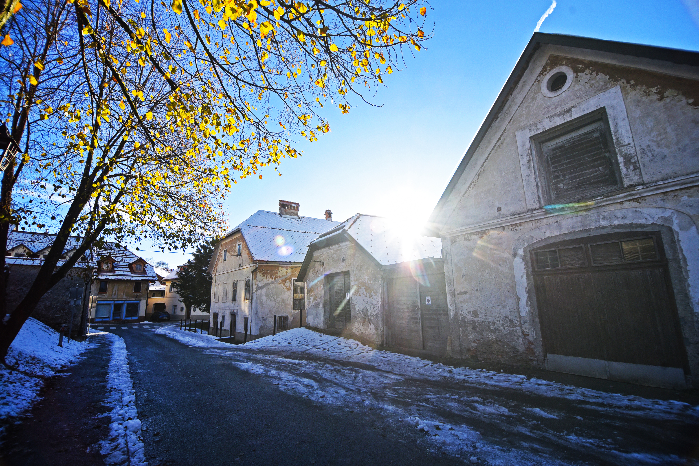

V slikovitem okolju Škofje Loke, enega najlepše ohranjenih srednjeveških mest v Sloveniji in mesta UNESCO-ve žive dediščine, ob Selški Sori stoji Koširjev mlin - ena najstarejših stavb Kapucinskega predmestja. Kot spomeniško zaščiten objekt iz leta 1309 že stoletja soustvarja podobo mesta in pripoveduje zgodbo življenja ob reki.
Le nekaj korakov stran je bil med letoma 1378 in 1381 zgrajen tudi znameniti Kamniti most. Skozi stoletja je Koširjev mlin menjal svojo podobo in namembnost. Leta 1782 ga je loško gospostvo prepustilo klarisam, kasneje pa je prešel v last družine Košir.

Prav tukaj se je leta 1906 rodil škofjeloški slikar Franc Košir. Po drugi svetovni vojni je bilo območje nacionalizirano, po denacionalizaciji leta 1998 pa sta Ljudmila in Vladimir Košir domačijo ponovno odkupila ter začela njeno obnovo.
Danes je Koširjev mlin na naslovu Kapucinski trg 25 v lasti družine Megušar. Andrej in Andreja Megušar s spoštovanjem do dediščine in ljubeznijo do ustvarjalnosti nadaljujeta zgodbo tega posebnega prostora. Njuna vizija je ohraniti dušo domačije, ji vdahniti novo življenje ter jo odpreti ljudem kot prostor bivanja, izobraževanja, kulturnih dogodkov in ustvarjalnih srečanj.
Koširjev mlin ni le stavba. Je prostor spominov, ustvarjalnosti in novih začetkov. Prostor, kjer se prepletata preteklost in sodobnost. Kjer iz starega nastaja novo, iz znanega drugačno in iz dediščine prihodnost.
Vabljeni, da postanete del zgodbe Koširjevega mlina.